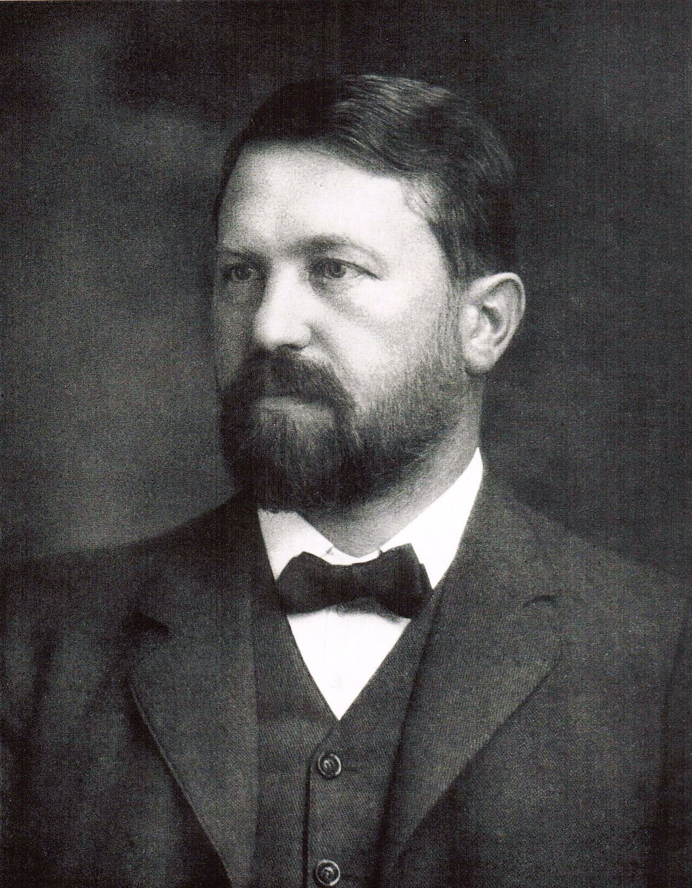

减数分裂和受精作用（上）：减数分裂
本期导读
减数分裂和受精作用（上） · 同源染色体 · 四分体

视频原话 · 导读3 句
- 同学们好！这节课梳理人教版必修二第二章第一节的上半部分——减数分裂。7.5s
- 高考常考同源染色体和四分体、各时期的特点、数量变化曲线和分裂图像的辨析。8.3s
- 我们按八个考点梳理，每个考点都讲清楚怎么考、怎么做。5.5s
减数分裂的概念01#
进行有性生殖的生物，在产生成熟生殖细胞时进行的染色体数目减半的细胞分裂
复制一次
染色体只复制一次（间期）
分裂两次
减数分裂Ⅰ、减数分裂Ⅱ
数目减半
精子、卵细胞的染色体数为体细胞的一半
易错
原核生物、只进行无性生殖的生物不进行减数分裂；减数分裂没有细胞周期
视频原话4 句
- 考点一，减数分裂的概念。它是进行有性生殖的生物，在产生成熟生殖细胞时进行的染色体数目减半的细胞分裂。11.2s
- 特点：染色体只复制一次，而细胞连续分裂两次。5.4s
- 结果：成熟生殖细胞中的染色体数目，比原始生殖细胞减少一半。6.6s
- 易错：原核生物和只进行无性生殖的生物不进行减数分裂；产生的生殖细胞不再连续分裂，所以减数分裂没有细胞周期。12.0s
同源染色体与四分体02#
- 1同源染色体形状、大小一般相同，一条来自父方、一条来自母方
- 2联会减数分裂Ⅰ前期，同源染色体两两配对
- 3四分体联会后的一对同源染色体（含 4 条染色单体）
- 4数量1 四分体 ＝ 1 对同源染色体 ＝ 2 条染色体 ＝ 4 条染色单体 ＝ 4 个 DNA
易错
同源染色体不是复制形成的（复制形成的是姐妹染色单体）；X 与 Y 大小不同，也是同源染色体
视频原话5 句
- 考点二，同源染色体和四分体。同源染色体是配对的两条染色体，形状和大小一般相同，一条来自父方，一条来自母方。12.4s
- 减数分裂Ⅰ前期，同源染色体两两配对，这叫联会。5.4s
- 联会后的每对同源染色体含有四条染色单体，叫作四分体。5.9s
- 1 个四分体 = 1 对同源染色体 = 2 条染色体 = 4 条染色单体 = 4 个 DNA 分子。8.7s
- 易错：同源染色体不是复制形成的，复制形成的是姐妹染色单体；X 和 Y 大小不同，但也是同源染色体。10.7s
减数分裂Ⅰ03#
易错
染色体数目减半发生在减数分裂Ⅰ（同源染色体分离）；减数分裂Ⅰ结束后细胞中没有同源染色体
视频原话5 句
- 考点三，减数分裂Ⅰ。间期染色体复制。前期Ⅰ，同源染色体联会形成四分体，非姐妹染色单体之间常发生互换。12.3s
- 中期Ⅰ，同源染色体成对排列在赤道板两侧。5.0s
- 后期Ⅰ，同源染色体分离，非同源染色体自由组合，分别移向细胞两极。7.3s
- 末期Ⅰ，细胞一分为二，形成两个次级精母细胞，染色体数目减半。6.6s
- 易错：染色体数目减半发生在减数分裂Ⅰ，原因是同源染色体分离；减数分裂Ⅰ结束后，细胞中就没有同源染色体了。11.7s
减数分裂Ⅱ04#
考法
减数分裂Ⅱ与有丝分裂相似，但没有同源染色体；后期Ⅱ细胞中染色体数与体细胞相同
视频原话5 句
- 考点四，减数分裂Ⅱ。两次分裂之间通常没有间期或间期很短，染色体不再复制。8.7s
- 中期Ⅱ，每条染色体的着丝粒排列在赤道板上。4.9s
- 后期Ⅱ，着丝粒分裂，姐妹染色单体分开，染色体数目暂时加倍。6.8s
- 末期Ⅱ，形成四个精细胞，再经过变形成为精子。5.2s
- 考法：减数分裂Ⅱ和有丝分裂很像，区别是没有同源染色体；后期Ⅱ细胞中的染色体数和体细胞相同。10.5s
精子与卵细胞形成05#
| 比较项目 | 精子的形成 | 卵细胞的形成 |
|---|---|---|
| 场所 | 睾丸（精巢） | 卵巢 |
| 细胞质分裂 | 均等分裂 | 初级、次级卵母细胞不均等分裂 |
| 结果 | 1 个精原细胞 → 4 个精子 | 1 个卵原细胞 → 1 个卵细胞 ＋ 3 个极体 |
| 是否变形 | 需要变形 | 不需要变形 |
解题方法
细胞质不均等分裂 → 一定是卵细胞形成过程；均等分裂的减数分裂Ⅱ细胞：次级精母细胞或第一极体
视频原话5 句
- 考点五，精子和卵细胞形成的比较。场所：精子在睾丸中形成，卵细胞在卵巢中形成。9.1s
- 初级卵母细胞和次级卵母细胞的细胞质不均等分裂，大的那个继续发育。7.1s
- 结果：一个精原细胞形成四个精子；一个卵原细胞只形成一个卵细胞和三个极体。8.1s
- 精细胞要经过变形才成为精子，卵细胞不需要变形。5.4s
- 解题方法：看到细胞质不均等分裂，一定是卵细胞的形成过程；均等分裂的减数分裂Ⅱ细胞，可能是次级精母细胞，也可能是第一极体。12.3s
染色体与DNA变化06#
- 1间期DNA 复制：2n → 4n，染色体不变
- 2减Ⅰ结束染色体 2n → n，DNA 4n → 2n
- 3后期Ⅱ染色体暂时恢复 2n
- 4减Ⅱ结束染色体、DNA 都是 n
解题方法
斜线上升＝DNA 复制；竖直下降＝细胞一分为二；染色体在后期Ⅱ先升后降
视频原话4 句
- 考点六，染色体数和核 DNA 数的变化。间期 DNA 复制，核 DNA 由 2n 变为 4n，染色体数不变。10.6s
- 减数分裂Ⅰ结束，细胞一分为二：染色体数由 2n 变为 n，核 DNA 由 4n 变为 2n。8.5s
- 后期Ⅱ着丝粒分裂，染色体数暂时恢复到 2n；减数分裂Ⅱ结束，染色体数和核 DNA 数都是 n。9.9s
- 解题方法：曲线斜着上升是 DNA 复制，竖直下降是细胞一分为二；染色体曲线在后期Ⅱ有一个先升后降的台阶。11.2s
分裂图像辨析07#
- 一看：有无同源染色体无 → 减数分裂Ⅱ
- 有 →二看：有无联会、四分体、同源分离有 → 减数分裂Ⅰ
- 无 →三看→ 有丝分裂
易错
有丝分裂全程都有同源染色体，只是不联会；先找形状、大小相同的两条染色体
视频原话4 句
- 考点七，分裂图像的辨析，用“三看”。一看有没有同源染色体：没有，就是减数分裂Ⅱ。8.8s
- 二看有没有同源染色体的特殊行为——联会、四分体、同源染色体分离：有，就是减数分裂Ⅰ。9.4s
- 三看：有同源染色体，但没有这些特殊行为，就是有丝分裂。6.2s
- 易错：有丝分裂全程都有同源染色体，只是不联会；判断时先找形状、大小相同的两条染色体。9.7s
配子的种类08#
一个精原细胞
4 个精子，2 种
AB、AB、ab、ab
或 Ab、Ab、aB、aB
AB、AB、ab、ab
或 Ab、Ab、aB、aB
不考虑互换
一个卵原细胞
1 个卵细胞
1 种
1 种
另外 3 个极体退化
一个个体
许多原始生殖细胞
4 种：AB、Ab、aB、ab
4 种：AB、Ab、aB、ab
n 对杂合基因 → 2n 种
易错
分清“一个细胞”与“一个个体”；考虑互换时，一个精原细胞可产生 4 种精子
视频原话4 句
- 考点八，配子的种类。一个 AaBb 的精原细胞，不考虑互换，产生 4 个精子，只有 2 种：AB 和 ab，或 Ab 和 aB。14.7s
- 一个卵原细胞只产生 1 个卵细胞，所以只有 1 种。4.7s
- 而一个 AaBb 的个体有许多精原细胞，可以产生 4 种配子；n 对杂合基因就是 2n 种。9.8s
- 易错：分清“一个细胞”和“一个个体”；如果考虑互换，一个精原细胞可以产生 4 种精子。8.0s
易错速查✓
先自己判断，再点按钮查看对错与解析。
- 1四分体是指一个细胞中含有四条染色体说法错误：是联会后的一对同源染色体（4 条染色单体）
- 2染色体数目减半发生在减数分裂Ⅱ说法错误：发生在减数分裂Ⅰ
- 3后期Ⅱ细胞中的染色体数与体细胞相同说法正确。
- 4细胞质均等分裂的细胞一定来自精子的形成过程说法错误：也可能是第一极体
- 5一个 AaBb 精原细胞（不考虑互换）产生 4 种精子说法错误：只产生 2 种
- 6有丝分裂过程中也存在同源染色体说法正确。
减Ⅰ分同源，减Ⅱ分姐妹！
视频原话 · 易错速查5 句
- 最后，用六道判断题检验一下。3.6s
- 判断一？错，四分体是一对同源染色体，含四条染色单体。判断二？错，减半发生在减数分裂Ⅰ。11.2s
- 判断三？对。判断四？错，也可能是第一极体。6.3s
- 判断五？错，只产生 2 种。判断六？对，有丝分裂全程都有同源染色体。9.0s
- 八个考点串成一条线：减Ⅰ分同源，减Ⅱ分姐妹。我们下期再见！6.8s
图片来源
图片来源：Wikimedia Commons —— 佚名《Theodor Boveri》Public domain
Theodor Boveri, Public domain